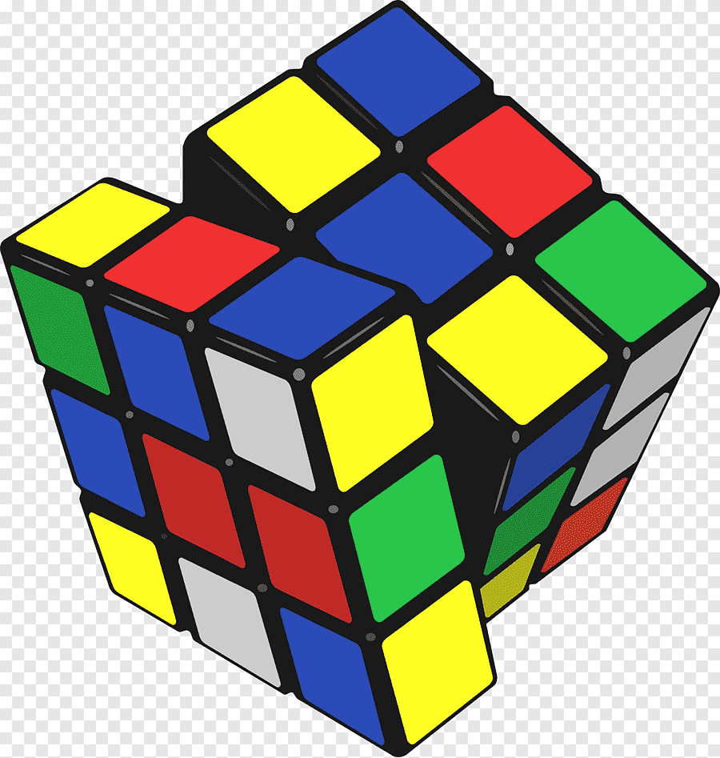

Table of contents
The Rubik's Cube is a 3-D combination puzzle invented in 1974 by Hungarian
sculptor and professor
of architecture
Rubik Ernő.
Originally called the Magic Cube, the puzzle was licensed by Rubik to be sold by Pentangle Puzzles in the UK in
1978, and then by Ideal Toy Corp in 1980 via businessman Tibor Laczi and Seven Towns founder Tom Kremer. The
cube was released internationally in 1980 and became one of the most recognized icons in popular culture.

In March 1970, Larry D. Nichols invented a 2×2×2 "Puzzle with Pieces Rotatable in Groups" and filed a Canadian patent application for it. Nichols's cube was held together by magnets. Nichols was granted U.S. patent 3,655,201 on 11 April 1972, two years before Rubik invented his Cube. On 9 April 1970, Frank Fox applied to patent an "amusement device", a type of sliding puzzle on a spherical surface with "at least two 3×3 arrays" intended to be used for the game of noughts and crosses. He received his UK patent (1344259) on 16 January 1974.
After the first batches of Rubik's Cubes were released in May 1980, initial sales were modest, but Ideal began a television advertising campaign in the middle of the year which it supplemented with newspaper advertisements. At the end of 1980, Rubik's Cube won a German Game of the Year special award and won similar awards for best toy in the UK, France, and the US. By 1981, Rubik's Cube had become a craze, and it is estimated that in the period from 1980 to 1983 around 200 million Rubik's Cubes were sold worldwide. In March 1981, a speedcubing championship organised by the Guinness Book of World Records was held in Munich, and a Rubik's Cube was depicted on the front cover of Scientific American that same month. In June 1981, The Washington Post reported that Rubik's Cube is "a puzzle that's moving like fast food right now ... this year's Hoola Hoop or Bongo Board", and by September 1981, New Scientist noted that the cube had "captivated the attention of children of ages from 7 to 70 all over the world this summer." As most people could solve only one or two sides, numerous books were published including David Singmaster's Notes on Rubik's "Magic Cube" (1980) and Patrick Bossert's You Can Do the Cube (1981). At one stage in 1981, three of the top ten best selling books in the US were books on solving Rubik's Cube, and the best-selling book of 1981 was James G. Nourse's The Simple Solution to Rubik's Cube which sold over 6 million copies. In 1981, the Museum of Modern Art in New York exhibited a Rubik's Cube, and at the 1982 World's Fair in Knoxville, Tennessee a six-foot Cube was put on display. ABC Television even developed a cartoon show called Rubik, the Amazing Cube. In June 1982, the First Rubik's Cube World Championship took place in Budapest and would become the only competition recognized as official until the championship was revived in 2003. In October 1982, The New York Times reported that sales had fallen and that "the craze has died", and by 1983 it was clear that sales had plummeted. However, in some countries such as China and the USSR, the craze had started later and demand was still high because of a shortage of Cubes.